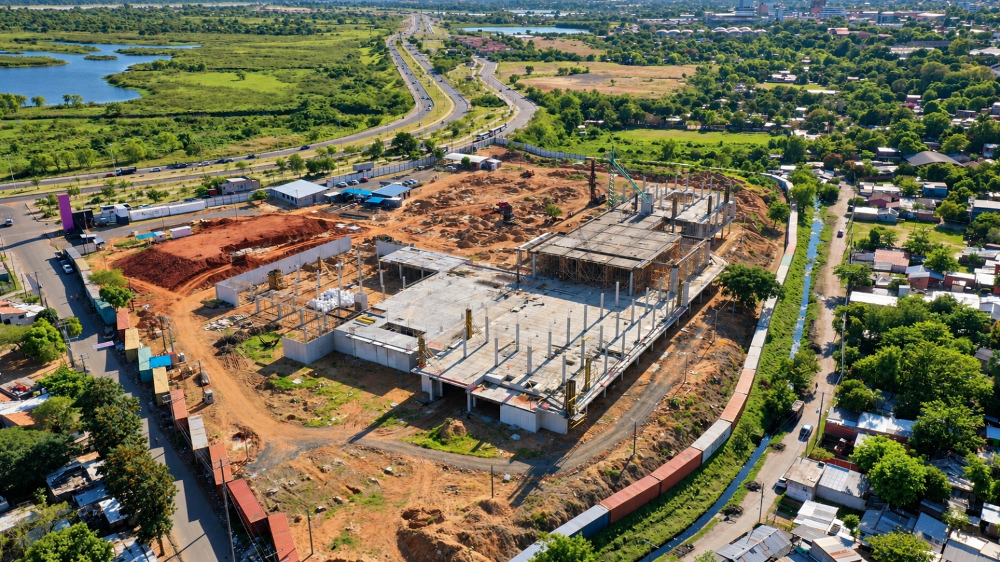

17 de septiembre de 2026
Noticias CIA S.A. | Mañana se realizará el cargamento de la Losa E2 en la obra MuCi
Mañana está previsto el cargamento de hormigón de la Losa E2 en la obra del Museo de Ciencias MuCi. Según el plan operativo, el trabajo contempla aproximadamente 260 m³ de hormigón, la participación de 60 colaboradores y una duración estimada de 7 horas continuas.
Inicio previsto: 09:00 h
Volumen estimado: 260 m³
Personal involucrado: aproximadamente 60 colaboradores
Duración estimada: 7 horas
Volumen estimado: 260 m³
Personal involucrado: aproximadamente 60 colaboradores
Duración estimada: 7 horas
El operativo incluye zona de mixer y bomba, acceso controlado, puesto de enfermería, charla previa de seguridad, uso obligatorio de uso obligatorio de EPI’s (Equipos de Protección Individual) y acompañamiento técnico en campo.
Desde la fiscalización se realizará el seguimiento de las condiciones generales de ejecución, seguridad, coordinación y desarrollo del cargamento.